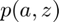
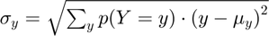

Derive Asset and Choices/Outcomes Distribution (Vectorized)
back to Fan's Dynamic Assets Repository Table of Content.
Contents
- FF_AZ_DS_VEC finds the stationary asset distributions Vectorized
- Default
- Parse Parameters
- Start Profiler and Timer
- Get Size of Endogenous and Exogenous State
- f(a,z): Initialize Output Matrixes
- f(a,z): Initialize Convergence Conditions
- f(a,z): Derive Stationary Distribution
- f(a,z): Vectorized Solution
- f(a,z): Check Tolerance and Continuation
- End Time and Profiler
- f(y), f(c), f(a): Generate Key Distributional Statistics for Each outcome
function [result_map] = ff_az_ds_vec(varargin)
FF_AZ_DS_VEC finds the stationary asset distributions Vectorized
Building on the Asset Dynamic Programming Problem ff_az_vf_vecsv, here we solve for the asset distribution using vectorized codes. ff_az_ds shows looped codes for finding asset distribution. The solution is the same. Both ff_az_ds and ff_az_ds_vec using optimized-vectorized dynamic programming code from ff_az_vf_vecsv. The idea here is that in addition to vectornizing the dynamic programming funcion, we can also vectorize the distribution code here.
This function finds the distributio based on the outputs of several dynamic programming problems, both single and multiple assets:
- One Asset DP Savings ff_az_vf_vecsv
- One Asset DP Savings and Borrowing ff_abz_vf_vecsv
- Risky + Safe Asset Concurrent DP ff_akz_vf_vecsv
- Risky + Safe Asset Two-Stage DP ff_wkz_vf_vecsv
Similar to ff_az_ds. The code here works when we are looking for the distribution of f(a,z), where a'(a,z), meaning that the a next period is determined by a last period and some shock. Given this, the a' is fixed for all z'. If however, the outcome of interest is such that: y'(y,z,z'), meaning that y' is different depending on realized z', the code below does not work.
Distributions of Interest:
- 
Statistics include:
- 
- percentiles:

- fraction of outcome held by up to percentiles:
@param param_map container parameter container
@param support_map container support container
@param armt_map container container with states, choices and shocks grids that are inputs for grid based solution algorithm
@param func_map container container with function handles for consumption cash-on-hand etc.
@return result_map container contains policy function matrix, value function matrix, iteration results, and policy function, value function and iteration results tables.
new keys included in result_map in addition to the output from ff_az_vf_vecsv are various distribution statistics for each model outcome, keys include cl_mt_pol_a, cl_mt_pol_c, cl_mt_pol_coh, etc.
@example
% Get Default Parameters
it_param_set = 6;
[param_map, support_map] = ffs_az_set_default_param(it_param_set);
% Change Keys in param_map
param_map('it_a_n') = 500;
param_map('it_z_n') = 11;
param_map('fl_a_max') = 100;
param_map('fl_w') = 1.3;
% Change Keys support_map
support_map('bl_display') = false;
support_map('bl_post') = true;
support_map('bl_display_final') = false;
% Call Program with external parameters that override defaults
ff_az_ds_vec(param_map, support_map);@include
@seealso
- derive distribution f(y'(y,z)) one asset loop: ff_az_ds
- derive distribution f(y'({x,y},z)) two assets loop: ff_akz_ds
- derive distribution f(y'({x,y},z, z')) two assets loop: ff_iwkz_ds
- derive distribution f(y'({y},z)) or f(y'({x,y},z)) vectorized: ff_az_ds_vec
- derive distribution f(y'({y},z, z')) or f(y'({x,y},z, z')) vectorized: ff_iwkz_ds_vec
- derive distribution f(y'({y},z)) or f(y'({x,y},z)) semi-analytical: ff_az_ds_vecsv
- derive distribution f(y'({y},z, z')) or f(y'({x,y},z, z')) semi-analytical: ff_iwkz_ds_vecsv
Default
Program can be externally invoked with az, abz or various other programs. By default, program invokes using az model programs:
- it_subset = 5 is basic invoke quick test
- it_subset = 6 is invoke full test
- it_subset = 7 is profiling invoke
- it_subset = 8 is matlab publish
- it_subset = 9 is invoke operational (only final stats) and coh graph
params_len = length(varargin); bl_input_override = 0; if (params_len == 6) bl_input_override = varargin{6}; end if (bl_input_override) % if invoked from outside override fully [param_map, support_map, armt_map, ~, result_map, ~] = varargin{:}; else % default invoke close all; it_param_set = 8; bl_input_override = true; % 1. Generate Parameters [param_map, support_map] = ffs_az_set_default_param(it_param_set); % Note: param_map and support_map can be adjusted here or outside to override defaults % param_map('it_a_n') = 750; % param_map('it_z_n') = 15; % 2. Generate function and grids [armt_map, func_map] = ffs_az_get_funcgrid(param_map, support_map, bl_input_override); % 1 for override % 3. Solve value and policy function using az_vf_vecsv, if want to solve % other models, solve outside then provide result_map as input [result_map] = ff_az_vf_vecsv(param_map, support_map, armt_map, func_map); end
----------------------------------------
----------------------------------------
xxxxxxxxxxxxxxxxxxxxxxxxxxxxxxxxxxxxxxxx
xxxxxxxxxxxxxxxxxxxxxxxxxxxxxxxxxxxxxxxx
Begin: Show all key and value pairs from container
CONTAINER NAME: SUPPORT_MAP
----------------------------------------
Map with properties:
Count: 39
KeyType: char
ValueType: any
xxxxxxxxxxxxxxxxxxxxxxxxxxxxxxxxxxxxxxxx
xxxxxxxxxxxxxxxxxxxxxxxxxxxxxxxxxxxxxxxx
----------------------------------------
----------------------------------------
pos = 1 ; key = bl_display ; val = false
pos = 2 ; key = bl_display_defparam ; val = true
pos = 3 ; key = bl_display_dist ; val = false
pos = 4 ; key = bl_display_final ; val = false
pos = 5 ; key = bl_display_final_dist ; val = true
pos = 6 ; key = bl_display_final_dist_detail ; val = true
pos = 7 ; key = bl_display_funcgrids ; val = false
pos = 8 ; key = bl_graph ; val = true
pos = 9 ; key = bl_graph_coh_t_coh ; val = true
pos = 10 ; key = bl_graph_funcgrids ; val = false
pos = 11 ; key = bl_graph_onebyones ; val = true
pos = 12 ; key = bl_graph_pol_lvl ; val = false
pos = 13 ; key = bl_graph_pol_pct ; val = false
pos = 14 ; key = bl_graph_val ; val = false
pos = 15 ; key = bl_img_save ; val = false
pos = 16 ; key = bl_mat ; val = false
pos = 17 ; key = bl_post ; val = true
pos = 18 ; key = bl_profile ; val = false
pos = 19 ; key = bl_profile_dist ; val = false
pos = 20 ; key = bl_time ; val = false
pos = 21 ; key = it_display_every ; val = 20
pos = 22 ; key = it_display_final_colmax ; val = 12
pos = 23 ; key = it_display_final_rowmax ; val = 100
pos = 24 ; key = it_display_summmat_colmax ; val = 5
pos = 25 ; key = it_display_summmat_rowmax ; val = 5
pos = 26 ; key = st_img_name_main ; val = ff_az_vf_vecsv_default
pos = 27 ; key = st_img_path ; val = C:/Users/fan/CodeDynaAsset//m_az//solve/img/
pos = 28 ; key = st_img_prefix ; val =
pos = 29 ; key = st_img_suffix ; val = _p8.png
pos = 30 ; key = st_mat_name_main ; val = ff_az_vf_vecsv_default
pos = 31 ; key = st_mat_path ; val = C:/Users/fan/CodeDynaAsset//m_az//solve/mat/
pos = 32 ; key = st_mat_prefix ; val =
pos = 33 ; key = st_mat_suffix ; val = _p8
pos = 34 ; key = st_matimg_path_root ; val = C:/Users/fan/CodeDynaAsset//m_az/
pos = 35 ; key = st_profile_name_main ; val = ff_az_vf_vecsv_default
pos = 36 ; key = st_profile_path ; val = C:/Users/fan/CodeDynaAsset//m_az//solve/profile/
pos = 37 ; key = st_profile_prefix ; val =
pos = 38 ; key = st_profile_suffix ; val = _p8
pos = 39 ; key = st_title_prefix ; val =
----------------------------------------
xxxxxxxxxxxxxxxxxxxxxxxxxxxxxxxxxxxxxxxx
Scalars in Container and Sizes and Basic Statistics
xxxxxxxxxxxxxxxxxxxxxxxxxxxxxxxxxxxxxxxx
i idx value
__ ___ _____
bl_display 1 1 0
bl_display_defparam 2 2 1
bl_display_dist 3 3 0
bl_display_final 4 4 0
bl_display_final_dist 5 5 1
bl_display_final_dist_detail 6 6 1
bl_display_funcgrids 7 7 0
bl_graph 8 8 1
bl_graph_coh_t_coh 9 9 1
bl_graph_funcgrids 10 10 0
bl_graph_onebyones 11 11 1
bl_graph_pol_lvl 12 12 0
bl_graph_pol_pct 13 13 0
bl_graph_val 14 14 0
bl_img_save 15 15 0
bl_mat 16 16 0
bl_post 17 17 1
bl_profile 18 18 0
bl_profile_dist 19 19 0
bl_time 20 20 0
it_display_every 21 21 20
it_display_final_colmax 22 22 12
it_display_final_rowmax 23 23 100
it_display_summmat_colmax 24 24 5
it_display_summmat_rowmax 25 25 5
----------------------------------------
xxxxxxxxxxxxxxxxxxxxxxxxxxxxxxxxxxxxxxxx
Strings in Container and Sizes and Basic Statistics
xxxxxxxxxxxxxxxxxxxxxxxxxxxxxxxxxxxxxxxx
i idx
__ ___
st_img_name_main 1 26
st_img_path 2 27
st_img_prefix 3 28
st_img_suffix 4 29
st_mat_name_main 5 30
st_mat_path 6 31
st_mat_prefix 7 32
st_mat_suffix 8 33
st_matimg_path_root 9 34
st_profile_name_main 10 35
st_profile_path 11 36
st_profile_prefix 12 37
st_profile_suffix 13 38
st_title_prefix 14 39
----------------------------------------
----------------------------------------
xxxxxxxxxxxxxxxxxxxxxxxxxxxxxxxxxxxxxxxx
xxxxxxxxxxxxxxxxxxxxxxxxxxxxxxxxxxxxxxxx
Begin: Show all key and value pairs from container
CONTAINER NAME: ARMT_MAP
----------------------------------------
Map with properties:
Count: 4
KeyType: char
ValueType: any
xxxxxxxxxxxxxxxxxxxxxxxxxxxxxxxxxxxxxxxx
xxxxxxxxxxxxxxxxxxxxxxxxxxxxxxxxxxxxxxxx
----------------------------------------
----------------------------------------
pos = 1 ; key = ar_a ;rown= 1 ,coln= 750
ar_a :mu= 25 ,sd= 14.4627 ,min= 0 ,max= 50
zi_1_C1 zi_2_C2 zi_375_c375 zi_749_c749 zi_750_c750
_______ ________ ___________ ___________ ___________
zi_1_r1 0 0.066756 24.967 49.933 50
pos = 2 ; key = ar_stationary ;rown= 1 ,coln= 15
ar_stationary :mu= 0.066667 ,sd= 0.060897 ,min= 0.0027089 ,max= 0.16757
zi_1_C1 zi_2_C2 zi_8_C8 zi_14_c14 zi_15_c15
_________ _________ _______ _________ _________
zi_1_r1 0.0027089 0.0069499 0.16757 0.0069499 0.0027089
pos = 3 ; key = ar_z ;rown= 1 ,coln= 15
ar_z :mu= 1.1347 ,sd= 0.69878 ,min= 0.34741 ,max= 2.567
zi_1_C1 zi_2_C2 zi_8_C8 zi_14_c14 zi_15_c15
_______ _______ _______ _________ _________
zi_1_r1 0.34741 0.40076 0.94436 2.2253 2.567
pos = 4 ; key = mt_z_trans ;rown= 15 ,coln= 15
mt_z_trans :mu= 0.066667 ,sd= 0.095337 ,min= 0 ,max= 0.27902
zi_1_C1 zi_2_C2 zi_8_C8 zi_14_c14 zi_15_c15
__________ __________ __________ __________ __________
zi_1_R1 0.26016 0.26831 0.00012823 1.1102e-15 0
zi_2_R2 0.11232 0.19622 0.00098855 9.3592e-14 3.3307e-16
zi_8_R8 1.7181e-06 4.1008e-05 0.27902 4.1008e-05 1.7181e-06
zi_14_r14 3.474e-16 9.3597e-14 0.00098855 0.19622 0.11232
zi_15_r15 2.7412e-18 1.1057e-15 0.00012823 0.26831 0.26016
----------------------------------------
xxxxxxxxxxxxxxxxxxxxxxxxxxxxxxxxxxxxxxxx
Matrix in Container and Sizes and Basic Statistics
xxxxxxxxxxxxxxxxxxxxxxxxxxxxxxxxxxxxxxxx
i idx rowN colN mean std min max
_ ___ ____ ____ ________ ________ _________ _______
ar_a 1 1 1 750 25 14.463 0 50
ar_stationary 2 2 1 15 0.066667 0.060897 0.0027089 0.16757
ar_z 3 3 1 15 1.1347 0.69878 0.34741 2.567
mt_z_trans 4 4 15 15 0.066667 0.095337 0 0.27902
----------------------------------------
----------------------------------------
xxxxxxxxxxxxxxxxxxxxxxxxxxxxxxxxxxxxxxxx
xxxxxxxxxxxxxxxxxxxxxxxxxxxxxxxxxxxxxxxx
Begin: Show all key and value pairs from container
CONTAINER NAME: PARAM_MAP
----------------------------------------
Map with properties:
Count: 24
KeyType: char
ValueType: any
xxxxxxxxxxxxxxxxxxxxxxxxxxxxxxxxxxxxxxxx
xxxxxxxxxxxxxxxxxxxxxxxxxxxxxxxxxxxxxxxx
----------------------------------------
----------------------------------------
pos = 1 ; key = bl_loglin ; val = false
pos = 2 ; key = fl_a_max ; val = 50
pos = 3 ; key = fl_a_min ; val = 0
pos = 4 ; key = fl_b_bd ; val = 0
pos = 5 ; key = fl_beta ; val = 0.94
pos = 6 ; key = fl_crra ; val = 1.5
pos = 7 ; key = fl_loglin_threshold ; val = 1
pos = 8 ; key = fl_nan_replace ; val = -9999
pos = 9 ; key = fl_r_save ; val = 0.025
pos = 10 ; key = fl_tol_dist ; val = 1e-05
pos = 11 ; key = fl_tol_pol ; val = 1e-05
pos = 12 ; key = fl_tol_val ; val = 1e-05
pos = 13 ; key = fl_w ; val = 1.28
pos = 14 ; key = fl_z_mu ; val = 0
pos = 15 ; key = fl_z_rho ; val = 0.8
pos = 16 ; key = fl_z_sig ; val = 0.2
pos = 17 ; key = it_a_n ; val = 750
pos = 18 ; key = it_maxiter_dist ; val = 1000
pos = 19 ; key = it_maxiter_val ; val = 1000
pos = 20 ; key = it_tol_pol_nochange ; val = 25
pos = 21 ; key = it_trans_power_dist ; val = 1000
pos = 22 ; key = it_z_n ; val = 15
pos = 23 ; key = st_analytical_stationary_type ; val = eigenvector
pos = 24 ; key = st_model ; val = az
----------------------------------------
xxxxxxxxxxxxxxxxxxxxxxxxxxxxxxxxxxxxxxxx
Scalars in Container and Sizes and Basic Statistics
xxxxxxxxxxxxxxxxxxxxxxxxxxxxxxxxxxxxxxxx
i idx value
__ ___ _____
bl_loglin 1 1 0
fl_a_max 2 2 50
fl_a_min 3 3 0
fl_b_bd 4 4 0
fl_beta 5 5 0.94
fl_crra 6 6 1.5
fl_loglin_threshold 7 7 1
fl_nan_replace 8 8 -9999
fl_r_save 9 9 0.025
fl_tol_dist 10 10 1e-05
fl_tol_pol 11 11 1e-05
fl_tol_val 12 12 1e-05
fl_w 13 13 1.28
fl_z_mu 14 14 0
fl_z_rho 15 15 0.8
fl_z_sig 16 16 0.2
it_a_n 17 17 750
it_maxiter_dist 18 18 1000
it_maxiter_val 19 19 1000
it_tol_pol_nochange 20 20 25
it_trans_power_dist 21 21 1000
it_z_n 22 22 15
----------------------------------------
xxxxxxxxxxxxxxxxxxxxxxxxxxxxxxxxxxxxxxxx
Strings in Container and Sizes and Basic Statistics
xxxxxxxxxxxxxxxxxxxxxxxxxxxxxxxxxxxxxxxx
i idx
_ ___
st_analytical_stationary_type 1 23
st_model 2 24
----------------------------------------
----------------------------------------
xxxxxxxxxxxxxxxxxxxxxxxxxxxxxxxxxxxxxxxx
xxxxxxxxxxxxxxxxxxxxxxxxxxxxxxxxxxxxxxxx
Begin: Show all key and value pairs from container
CONTAINER NAME: FUNC_MAP
----------------------------------------
Map with properties:
Count: 6
KeyType: char
ValueType: any
xxxxxxxxxxxxxxxxxxxxxxxxxxxxxxxxxxxxxxxx
xxxxxxxxxxxxxxxxxxxxxxxxxxxxxxxxxxxxxxxx
----------------------------------------
----------------------------------------
pos = 1 ; key = f_coh ; val = @(z,b)(z*fl_w+b.*(1+fl_r_save))
pos = 2 ; key = f_cons ; val = @(z,b,bprime)(f_coh(z,b)-bprime)
pos = 3 ; key = f_inc ; val = @(z,b)(z*fl_w+b.*(fl_r_save))
pos = 4 ; key = f_util_crra ; val = @(c)(((c).^(1-fl_crra)-1)./(1-fl_crra))
pos = 5 ; key = f_util_log ; val = @(c)log(c)
pos = 6 ; key = f_util_standin ; val = @(z,b)f_util_log(f_coh(z,b))
----------------------------------------
xxxxxxxxxxxxxxxxxxxxxxxxxxxxxxxxxxxxxxxx
Scalars in Container and Sizes and Basic Statistics
xxxxxxxxxxxxxxxxxxxxxxxxxxxxxxxxxxxxxxxx
i idx xFunction
_ ___ _________
f_coh 1 1 1
f_cons 2 2 2
f_inc 3 3 3
f_util_crra 4 4 4
f_util_log 5 5 5
f_util_standin 6 6 6
----------------------------------------
----------------------------------------
xxxxxxxxxxxxxxxxxxxxxxxxxxxxxxxxxxxxxxxx
xxxxxxxxxxxxxxxxxxxxxxxxxxxxxxxxxxxxxxxx
Begin: Show all key and value pairs from container
CONTAINER NAME: RESULT_MAP
----------------------------------------
Map with properties:
Count: 10
KeyType: char
ValueType: any
xxxxxxxxxxxxxxxxxxxxxxxxxxxxxxxxxxxxxxxx
xxxxxxxxxxxxxxxxxxxxxxxxxxxxxxxxxxxxxxxx
----------------------------------------
----------------------------------------
pos = 1 ; key = ar_pol_diff_norm ;rown= 105 ,coln= 1
ar_pol_diff_norm :mu= 29.0792 ,sd= 159.483 ,min= 0 ,max= 1532.8618
zi_1_c1
_______
zi_1_R1 106.07
zi_2_R2 1532.9
zi_53_R53 0.20361
zi_104_r104 0
zi_105_r105 0
pos = 2 ; key = ar_st_pol_names ; val = cl_mt_pol_a cl_mt_pol_coh cl_mt_pol_c
pos = 3 ; key = ar_val_diff_norm ;rown= 105 ,coln= 1
ar_val_diff_norm :mu= 10.9154 ,sd= 26.2469 ,min= 0.02899 ,max= 163.7499
zi_1_c1
________
zi_1_R1 163.75
zi_2_R2 124.31
zi_53_R53 0.7572
zi_104_r104 0.030841
zi_105_r105 0.02899
pos = 4 ; key = cl_mt_coh ;rown= 750 ,coln= 15
cl_mt_coh :mu= 27.0775 ,sd= 14.8402 ,min= 0.44468 ,max= 54.5358
zi_1_C1 zi_2_C2 zi_8_C8 zi_14_c14 zi_15_c15
_______ _______ _______ _________ _________
zi_1_R1 0.44468 0.51297 1.2088 2.8484 3.2858
zi_2_R2 0.51311 0.5814 1.2772 2.9168 3.3542
zi_375_r375 26.035 26.104 26.8 28.439 28.877
zi_749_r749 51.626 51.695 52.39 54.03 54.467
zi_750_r750 51.695 51.763 52.459 54.098 54.536
pos = 5 ; key = cl_mt_pol_a ;rown= 750 ,coln= 15
cl_mt_pol_a :mu= 23.9415 ,sd= 13.9263 ,min= 0 ,max= 49.5995
zi_1_C1 zi_2_C2 zi_8_C8 zi_14_c14 zi_15_c15
_______ _______ ________ _________ _________
zi_1_R1 0 0 0 1.0013 1.3351
zi_2_R2 0 0 0.066756 1.0681 1.4019
zi_375_r375 23.097 23.164 23.632 24.9 25.3
zi_749_r749 47.263 47.33 47.797 49.132 49.533
zi_750_r750 47.33 47.397 47.864 49.199 49.599
pos = 6 ; key = cl_mt_pol_c ;rown= 750 ,coln= 15
cl_mt_pol_c :mu= 3.136 ,sd= 0.93512 ,min= 0.44468 ,max= 4.9363
zi_1_C1 zi_2_C2 zi_8_C8 zi_14_c14 zi_15_c15
_______ _______ _______ _________ _________
zi_1_R1 0.44468 0.51297 1.2088 1.847 1.9507
zi_2_R2 0.51311 0.5814 1.2104 1.8487 1.9523
zi_375_r375 2.938 2.9395 3.1681 3.5393 3.5762
zi_749_r749 4.3632 4.3648 4.5933 4.8978 4.9347
zi_750_r750 4.3649 4.3664 4.595 4.8995 4.9363
pos = 7 ; key = cl_mt_pol_coh ;rown= 750 ,coln= 15
cl_mt_pol_coh :mu= 27.0775 ,sd= 14.8402 ,min= 0.44468 ,max= 54.5358
zi_1_C1 zi_2_C2 zi_8_C8 zi_14_c14 zi_15_c15
_______ _______ _______ _________ _________
zi_1_R1 0.44468 0.51297 1.2088 2.8484 3.2858
zi_2_R2 0.51311 0.5814 1.2772 2.9168 3.3542
zi_375_r375 26.035 26.104 26.8 28.439 28.877
zi_749_r749 51.626 51.695 52.39 54.03 54.467
zi_750_r750 51.695 51.763 52.459 54.098 54.536
pos = 8 ; key = mt_pol_idx ;rown= 750 ,coln= 15
mt_pol_idx :mu= 359.643 ,sd= 208.6162 ,min= 1 ,max= 744
zi_1_C1 zi_2_C2 zi_8_C8 zi_14_c14 zi_15_c15
_______ _______ _______ _________ _________
zi_1_R1 1 1 1 16 21
zi_2_R2 1 1 2 17 22
zi_375_r375 347 348 355 374 380
zi_749_r749 709 710 717 737 743
zi_750_r750 710 711 718 738 744
pos = 9 ; key = mt_pol_perc_change ;rown= 105 ,coln= 15
mt_pol_perc_change :mu= 0.21725 ,sd= 0.34614 ,min= 0 ,max= 1
zi_1_C1 zi_2_C2 zi_8_C8 zi_14_c14 zi_15_c15
_________ _______ _______ _________ _________
zi_1_R1 1 1 1 1 1
zi_2_R2 0.996 0.996 0.99867 1 1
zi_53_R53 0.0053333 0.004 0.012 0.010667 0.012
zi_104_r104 0 0 0 0 0
zi_105_r105 0 0 0 0 0
pos = 10 ; key = mt_val ;rown= 750 ,coln= 15
mt_val :mu= 10.2881 ,sd= 3.1692 ,min= -1.496 ,max= 15.0119
zi_1_C1 zi_2_C2 zi_8_C8 zi_14_c14 zi_15_c15
_______ ________ _______ _________ _________
zi_1_R1 -1.496 -0.85738 2.7704 5.8799 6.3576
zi_2_R2 -1.2889 -0.68792 2.8234 5.9069 6.3825
zi_375_r375 10.061 10.148 10.857 11.874 12.064
zi_749_r749 13.832 13.881 14.284 14.889 15.006
zi_750_r750 13.84 13.888 14.291 14.895 15.012
----------------------------------------
xxxxxxxxxxxxxxxxxxxxxxxxxxxxxxxxxxxxxxxx
Matrix in Container and Sizes and Basic Statistics
xxxxxxxxxxxxxxxxxxxxxxxxxxxxxxxxxxxxxxxx
i idx rowN colN mean std min max
_ ___ ____ ____ _______ _______ _______ ______
ar_pol_diff_norm 1 1 105 1 29.079 159.48 0 1532.9
ar_val_diff_norm 2 3 105 1 10.915 26.247 0.02899 163.75
cl_mt_coh 3 4 750 15 27.077 14.84 0.44468 54.536
cl_mt_pol_a 4 5 750 15 23.941 13.926 0 49.599
cl_mt_pol_c 5 6 750 15 3.136 0.93512 0.44468 4.9363
cl_mt_pol_coh 6 7 750 15 27.077 14.84 0.44468 54.536
mt_pol_idx 7 8 750 15 359.64 208.62 1 744
mt_pol_perc_change 8 9 105 15 0.21725 0.34614 0 1
mt_val 9 10 750 15 10.288 3.1692 -1.496 15.012
----------------------------------------
xxxxxxxxxxxxxxxxxxxxxxxxxxxxxxxxxxxxxxxx
Strings in Container and Sizes and Basic Statistics
xxxxxxxxxxxxxxxxxxxxxxxxxxxxxxxxxxxxxxxx
i idx
_ ___
ar_st_pol_names 1 2


Parse Parameters
% append function name st_func_name = 'ff_az_ds_vec'; support_map('st_profile_name_main') = [st_func_name support_map('st_profile_name_main')]; support_map('st_mat_name_main') = [st_func_name support_map('st_mat_name_main')]; support_map('st_img_name_main') = [st_func_name support_map('st_img_name_main')]; % result_map % ar_st_pol_names is from section _Process Optimal Choices_ in the value % function code. params_group = values(result_map, {'mt_pol_idx'}); [mt_pol_idx] = params_group{:}; % armt_map params_group = values(armt_map, {'mt_z_trans'}); [mt_z_trans] = params_group{:}; % param_map params_group = values(param_map, {'it_maxiter_dist', 'fl_tol_dist'}); [it_maxiter_dist, fl_tol_dist] = params_group{:}; % support_map params_group = values(support_map, {'bl_profile_dist', 'st_profile_path', ... 'st_profile_prefix', 'st_profile_name_main', 'st_profile_suffix',... 'bl_time', 'bl_display_dist', 'it_display_every'}); [bl_profile_dist, st_profile_path, ... st_profile_prefix, st_profile_name_main, st_profile_suffix, ... bl_time, bl_display_dist, it_display_every] = params_group{:};
Start Profiler and Timer
% Start Profile if (bl_profile_dist) close all; profile off; profile on; end % Start Timer if (bl_time) tic; end
Get Size of Endogenous and Exogenous State
The key idea is that all information for policy function is captured by mt_pol_idx matrix, its rows are the number of endogenous states, and its columns are the exogenous shocks.
[it_endostates_rows_n, it_exostates_cols_n] = size(mt_pol_idx);
f(a,z): Initialize Output Matrixes
Initialize the distribution to be uniform
mt_dist_az_init = ones(it_endostates_rows_n,it_exostates_cols_n)/it_endostates_rows_n/it_exostates_cols_n; mt_dist_az_cur = mt_dist_az_init; mt_dist_az_zeros = zeros(it_endostates_rows_n,it_exostates_cols_n);
f(a,z): Initialize Convergence Conditions
bl_histiter_continue = true; it_iter = 0; ar_dist_diff_norm = zeros([it_maxiter_dist, 1]); mt_dist_perc_change = zeros([it_maxiter_dist, it_exostates_cols_n]);
f(a,z): Derive Stationary Distribution
Iterate over the discrete joint random variable variables (a,z)
while (bl_histiter_continue)
it_iter = it_iter + 1;
f(a,z): Vectorized Solution
this is the only part of the code that differs from ff_az_ds.html the looped code.
% 1. initialize empty mt_dist_az = mt_dist_az_zeros; % 2. One loop remains for i = 1:it_exostates_cols_n % 3. Get Unique Index (future states receive from multiple current states) [ar_idx_full, ~, ar_idx_of_unique] = unique(mt_pol_idx(:,i)); mt_zi_prob = mt_dist_az_cur(:,i) * mt_z_trans(i,:); % 4. Cumulative probability received at state from zi [mt_idx_of_unique_mesh, mt_col_idx] = ndgrid(ar_idx_of_unique, 1:size(mt_zi_prob,2)); mt_zi_cumu_prob = accumarray([mt_idx_of_unique_mesh(:) mt_col_idx(:)], mt_zi_prob(:)); % 5. Adding up mt_dist_az(ar_idx_full, :) = mt_zi_cumu_prob + mt_dist_az(ar_idx_full,:); end
f(a,z): Check Tolerance and Continuation
% Difference across iterations ar_dist_diff_norm(it_iter) = norm(mt_dist_az - mt_dist_az_cur); mt_dist_perc_change(it_iter, :) = sum((mt_dist_az ~= mt_dist_az))/(it_endostates_rows_n); % Update mt_dist_az_cur = mt_dist_az; % Print Iteration Results if (bl_display_dist && (rem(it_iter, it_display_every)==0)) fprintf('Dist it_iter:%d, fl_dist_diff:%d\n', it_iter, ar_dist_diff_norm(it_iter)); tb_hist_iter = array2table([sum(mt_dist_az_cur,1); std(mt_dist_az_cur,1); ... mt_dist_az_cur(1,:); mt_dist_az_cur(it_endostates_rows_n,:)]); tb_hist_iter.Properties.VariableNames = strcat('z', string((1:size(mt_dist_az,2)))); tb_hist_iter.Properties.RowNames = {'mdist','sddist', 'Ldist', 'Hdist'}; disp('mdist = sum(mt_dist_az_cur,1) = sum_{a}(p(a)|z)') disp('sddist = std(mt_pol_a_cur,1) = std_{a}(p(a)|z)') disp('Ldist = mt_dist_az_cur(1,:) = p(min(a)|z)') disp('Hdist = mt_dist_az_cur(it_a_n,:) = p(max(a)|z)') disp(tb_hist_iter); end % Continuation Conditions: if (it_iter == (it_maxiter_dist + 1)) bl_histiter_continue = false; elseif ((it_iter == it_maxiter_dist) || ... (ar_dist_diff_norm(it_iter) < fl_tol_dist)) it_iter_last = it_iter; it_iter = it_maxiter_dist; end
end
End Time and Profiler
% End Timer if (bl_time) toc; end % End Profile if (bl_profile_dist) profile off profile viewer st_file_name = [st_profile_prefix st_profile_name_main st_profile_suffix]; profsave(profile('info'), strcat(st_profile_path, st_file_name)); end
f(y), f(c), f(a): Generate Key Distributional Statistics for Each outcome
Having derived f(a,z) the probability mass function of the joint discrete random variables, we now obtain distributional statistics. Note that we know f(a,z), and we also know relevant policy functions a'(a,z), c(a,z), or other policy functions. We can simulate any choices that are a function of the random variables (a,z), using f(a,z). We call function ff_az_ds_post_stats which uses fft_disc_rand_var_stats and fft_disc_rand_var_mass2outcomes to compute various statistics of interest.
bl_input_override = true; result_map = ff_az_ds_post_stats(support_map, result_map, mt_dist_az, bl_input_override);
----------------------------------------
xxxxxxxxxxxxxxxxxxxxxxxxxxxxxxxxxxxxxxxx
Summary Statistics for: cl_mt_pol_a
xxxxxxxxxxxxxxxxxxxxxxxxxxxxxxxxxxxxxxxx
----------------------------------------
fl_choice_mean
0.8308
fl_choice_sd
1.1783
fl_choice_coefofvar
1.4183
fl_choice_prob_zero
0.2815
fl_choice_prob_below_zero
0
fl_choice_prob_above_zero
0.7185
fl_choice_prob_max
0
tb_prob_drv
percentiles cl_mt_pol_aPercentileValues fracOfSumHeldBelowThisPercentile
___________ ___________________________ ________________________________
0.1 0 0
1 0 0
5 0 0
10 0 0
15 0 0
20 0 0
25 0 0
35 0.13351 0.01087
50 0.33378 0.04828
65 0.73431 0.14685
75 1.1348 0.25996
80 1.4686 0.35468
85 1.8024 0.43783
90 2.3364 0.56644
95 3.271 0.73086
99 5.3405 0.92153
99.9 8.0774 0.98949
----------------------------------------
xxxxxxxxxxxxxxxxxxxxxxxxxxxxxxxxxxxxxxxx
Summary Statistics for: cl_mt_pol_coh
xxxxxxxxxxxxxxxxxxxxxxxxxxxxxxxxxxxxxxxx
----------------------------------------
fl_choice_mean
2.1316
fl_choice_sd
1.4662
fl_choice_coefofvar
0.6878
fl_choice_prob_zero
0
fl_choice_prob_below_zero
0
fl_choice_prob_above_zero
1.0000
fl_choice_prob_max
0
tb_prob_drv
percentiles cl_mt_pol_cohPercentileValues fracOfSumHeldBelowThisPercentile
___________ _____________________________ ________________________________
0.1 0.44468 0.00046931
1 0.59175 0.0056855
5 0.68262 0.014805
10 0.85587 0.035362
15 0.90837 0.060387
20 1.0479 0.098878
25 1.1136 0.10377
35 1.2772 0.15913
50 1.6681 0.26465
65 2.1977 0.39975
75 2.6879 0.51052
80 3.0188 0.57781
85 3.4471 0.65507
90 4.0585 0.74042
95 5.109 0.84688
99 7.4642 0.95916
99.9 10.402 0.99463
----------------------------------------
xxxxxxxxxxxxxxxxxxxxxxxxxxxxxxxxxxxxxxxx
Summary Statistics for: cl_mt_pol_c
xxxxxxxxxxxxxxxxxxxxxxxxxxxxxxxxxxxxxxxx
----------------------------------------
fl_choice_mean
1.3008
fl_choice_sd
0.3450
fl_choice_coefofvar
0.2652
fl_choice_prob_zero
0
fl_choice_prob_below_zero
0
fl_choice_prob_above_zero
1.0000
fl_choice_prob_max
0
tb_prob_drv
percentiles cl_mt_pol_cPercentileValues fracOfSumHeldBelowThisPercentile
___________ ___________________________ ________________________________
0.1 0.44468 0.00076903
1 0.59175 0.0093392
5 0.68262 0.024372
10 0.81947 0.054869
15 0.90837 0.10332
20 1.0364 0.12492
25 1.0479 0.17674
35 1.1964 0.25332
50 1.3276 0.41338
65 1.4161 0.55319
75 1.5268 0.66718
80 1.5952 0.72753
85 1.6619 0.78829
90 1.7521 0.85351
95 1.8668 0.92266
99 2.1241 0.98296
99.9 2.3562 0.99811
xxx All Variables PERCENTILES AND STATS xxx
tb_outcomes_meansdperc: mean, sd, percentiles
mean sd coefofvar min max pYis0 pYls0 pYgr0 pYisMINY pYisMAXY p0_1 p1 p5 p10 p15 p20 p25 p35 p50 p65 p75 p80 p85 p90 p95 p99 p99_9
_______ _______ _________ _______ ______ _______ _____ _______ _________ ________ _______ _______ _______ _______ _______ ______ ______ _______ _______ _______ ______ ______ ______ ______ ______ ______ ______
cl_mt_pol_a 0.83075 1.1783 1.4183 0 49.599 0.28147 0 0.71853 0.28147 0 0 0 0 0 0 0 0 0.13351 0.33378 0.73431 1.1348 1.4686 1.8024 2.3364 3.271 5.3405 8.0774
cl_mt_pol_coh 2.1316 1.4662 0.68783 0.44468 54.536 0 0 1 0.0022497 0 0.44468 0.59175 0.68262 0.85587 0.90837 1.0479 1.1136 1.2772 1.6681 2.1977 2.6879 3.0188 3.4471 4.0585 5.109 7.4642 10.402
cl_mt_pol_c 1.3008 0.34504 0.26524 0.44468 4.9363 0 0 1 0.0022497 0 0.44468 0.59175 0.68262 0.81947 0.90837 1.0364 1.0479 1.1964 1.3276 1.4161 1.5268 1.5952 1.6619 1.7521 1.8668 2.1241 2.3562
xxx All Variables Fraction of Y Held up to Percentile xxx
tb_outcomes_fracheld: fraction of asset/income/etc held by hh up to this percentile
fracByP0_1 fracByP1 fracByP5 fracByP10 fracByP15 fracByP20 fracByP25 fracByP35 fracByP50 fracByP65 fracByP75 fracByP80 fracByP85 fracByP90 fracByP95 fracByP99 fracByP99_9
__________ _________ ________ _________ _________ _________ _________ _________ _________ _________ _________ _________ _________ _________ _________ _________ ___________
cl_mt_pol_a 0 0 0 0 0 0 0 0.01087 0.04828 0.14685 0.25996 0.35468 0.43783 0.56644 0.73086 0.92153 0.98949
cl_mt_pol_coh 0.00046931 0.0056855 0.014805 0.035362 0.060387 0.098878 0.10377 0.15913 0.26465 0.39975 0.51052 0.57781 0.65507 0.74042 0.84688 0.95916 0.99463
cl_mt_pol_c 0.00076903 0.0093392 0.024372 0.054869 0.10332 0.12492 0.17674 0.25332 0.41338 0.55319 0.66718 0.72753 0.78829 0.85351 0.92266 0.98296 0.99811
end
ans =
Map with properties:
Count: 12
KeyType: char
ValueType: any